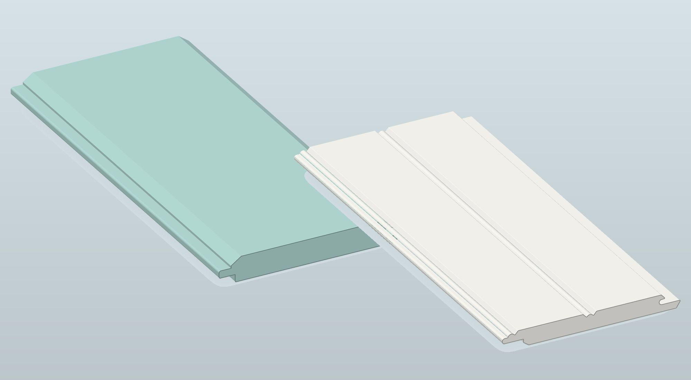
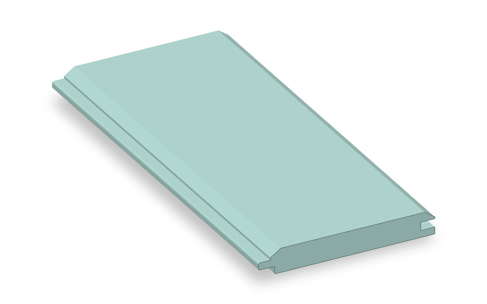
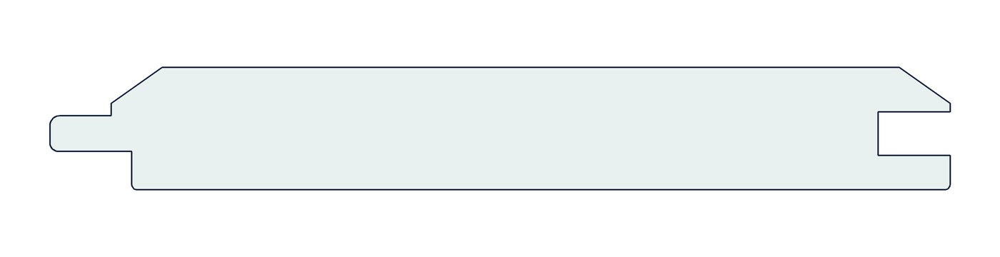
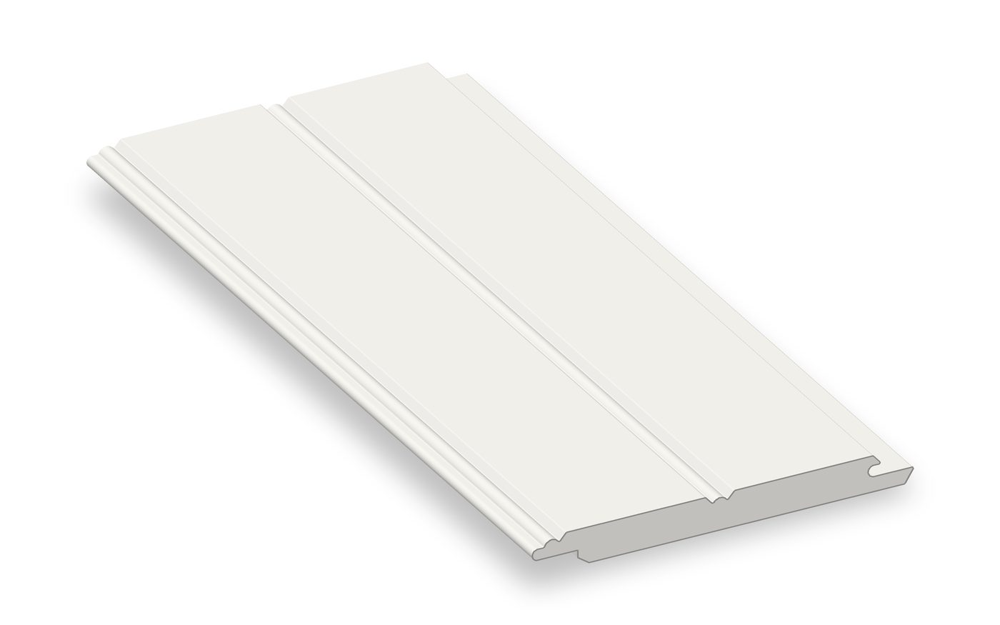
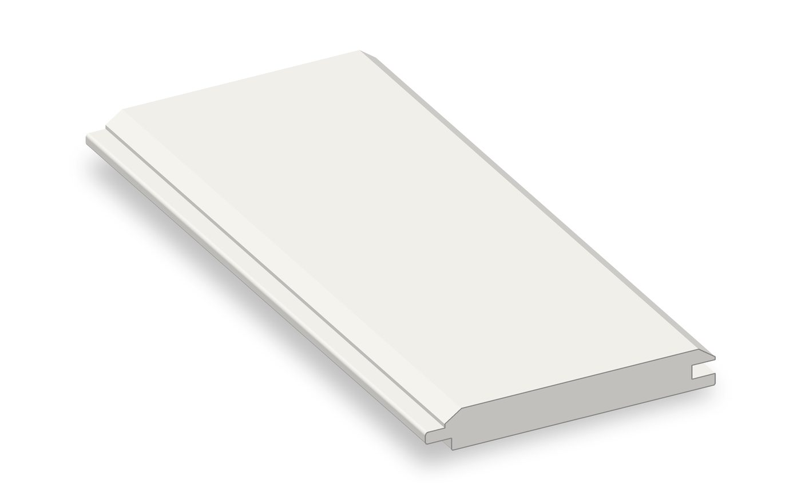
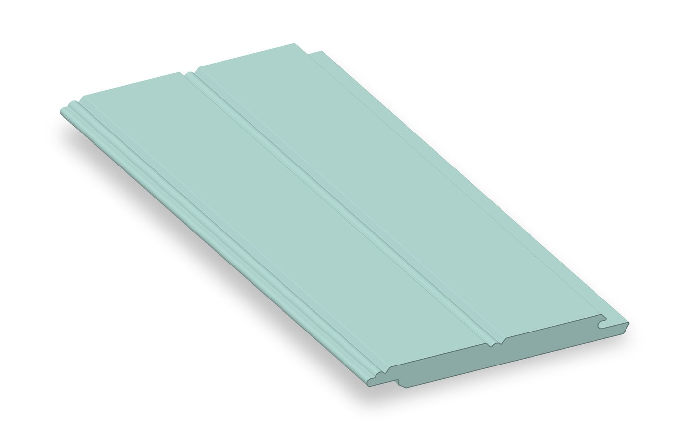

Look up.
Feel at home.
Shiplap Nickelgap and 6" E&CB Beadboard for the ceiling over your porch, in crisp white or a soft, classic porch ceiling blue. By American Pro, a Brand of Patwin Plastics.
The part of the porch
you see every evening.
A porch ceiling is what you see from the swing, from the rocking chair, and from the top step when you come home. It frames the shade on a hot afternoon and the glow of the light over the door at night. A clean ceiling tells every guest the same thing: welcome, come sit a while.
Choose a smooth shiplap look or a traditional beadboard look, pick white or a soft porch ceiling blue, and order the lengths your porch actually needs. It is the kind of detail that makes you proud to turn on the porch light.
Pick the look
that suits your home.
Both profiles come from our Beadboard & Balusters family of mouldings. Sizes are thickness x width.

Shiplap Nickelgap.
Clean lines overhead.
A smooth, modern farmhouse look with a crisp shadow line between every board. Each board has a tongue on one side and a groove on the other, so the ceiling goes up board by board and reads as one calm, even surface.
- PartWP4
- Size3/4" x 5-1/2"
- ProfileTongue one side, groove the other
- FamilyBeadboard & Balusters

6" E&CB Beadboard.
The classic porch look.
The traditional beaded ceiling that has welcomed people onto front porches for generations. The panels interlock, and the bead detail adds a soft rhythm of shadow that feels at home on a farmhouse, a cottage, or a grand old Victorian.
- PartECB6PVC
- Size1/2" x 5-1/2"
- ProfileInterlocking beadboard panel
- FamilyBeadboard & Balusters

ECB Cap ECBCAPPVC
The matching cap moulding for a neat, finished edge on your beadboard ceiling. Size 3/4" x 1-3/4".
| Product | Part | Size | Standard length | Colors |
|---|---|---|---|---|
| Shiplap Nickelgap | WP4 | 3/4" x 5-1/2" | 16 ft, custom lengths available | White, porch ceiling blue |
| 6" E&CB Beadboard | ECB6PVC | 1/2" x 5-1/2" | 16 ft, custom lengths available | White, porch ceiling blue |
| ECB Cap | ECBCAPPVC | 3/4" x 1-3/4" | Ask us | Ask us |
Bright and simple,
or a little bit of sky.
White keeps the porch bright and clean. The soft porch ceiling blue, the pale aqua many people call haint blue, brings a cool, restful feeling overhead, like a patch of summer sky that stays put.


Colors on screen are a guide. Request a sample to see the real color in your own light.
Standard 16 ft lengths.
Or the length you need.
Our standard length is 16 ft, and any custom length is available. Order boards cut to suit your porch so the ceiling runs clean, with fewer joints to plan around.
Built by people
who make mouldings.
- Custom lengths. Standard 16 ft, plus any custom length you need.
- A US manufacturer. Made in America by Patwin Plastics.
- A full range of profiles. Pair your ceiling with crowns, coves, and base mouldings from our mouldings catalog, and finish the floor with American Pro porch flooring.
- Free samples. Hold the profile and the color in your hand before you decide.
Looking for a profile you do not see here? Learn about our custom and historic profiles.
Porch ceilings,
answered.
Which porch ceiling profiles does American Pro offer?
Two: WP4 Shiplap Nickelgap at 3/4" x 5-1/2", and ECB6PVC 6" E&CB Beadboard at 1/2" x 5-1/2". The ECB Cap, ECBCAPPVC, at 3/4" x 1-3/4", is the matching finishing piece.
What lengths are available?
The standard length is 16 ft, and any custom length is available. Tell us about your porch and we will help you plan the order.
What colors can I choose?
White, and a soft, classic porch ceiling blue in the pale aqua tone often called haint blue.
How do the boards fit together?
The Shiplap Nickelgap board has a tongue on one side and a groove on the other. The 6" E&CB Beadboard is an interlocking beadboard panel.
Can I see a sample first?
Yes. Use the form below to request samples of the profiles and colors you are considering, or call us at 1-877-442-6776, Mon to Fri, 8 AM to 4 PM ET.
See it overhead
before you decide.
Pick the profiles and colors you would like to see in person and we will mail samples so you can hold them up to your porch in real light.